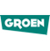
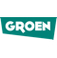

Hostfrogs is een creatief hosting bedrijf met een groot engagement. Samen met u gaan we op zoek naar de beste oplossing

Specifieke shared hosting geoptimaliseerd voor Drupal,PHP,Magento,Ruby on Rails en andere technologieën.Een stabiele omgeving met sterke ondersteuning.
Lees meerFully managed services is de core- business van Hostfrogs. We bieden server-oplossingen aan die meeschalen met de behoeften van uw project,zowel "cloud" als dedicated servers op maat van uw project
Lees meerAls B2B bedrijf bieden wij oplossingen aan specifiek voor partners. We streven contstant naar kwaliteitsoplossingen op maat me garanties en een persoonlijke aanpak.
Lees meerDe eerste Techtalk van 2012 was er eentje waar we MySQL uit de doeken deden. Niet eenvoudig om alle aspecten weer te geven over één van de populairste database servers, namelijk MySQL.
Lees meer


Kobalt is up and running again.If you experience problems,let us know
Getweet op 27/02, om 22:10


 

''We geloven in het principe 'ieder zijn expertise'.Voor alles wat met hosting te maken heeft,vertrouwen we op de uitgebreide kennis en ervaring van Openfrogs.Ze delen onze visie op kwaliteit en service"
-Bart De Waele,Netlash